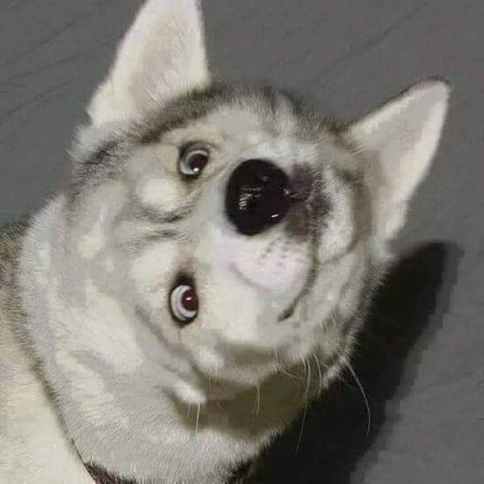
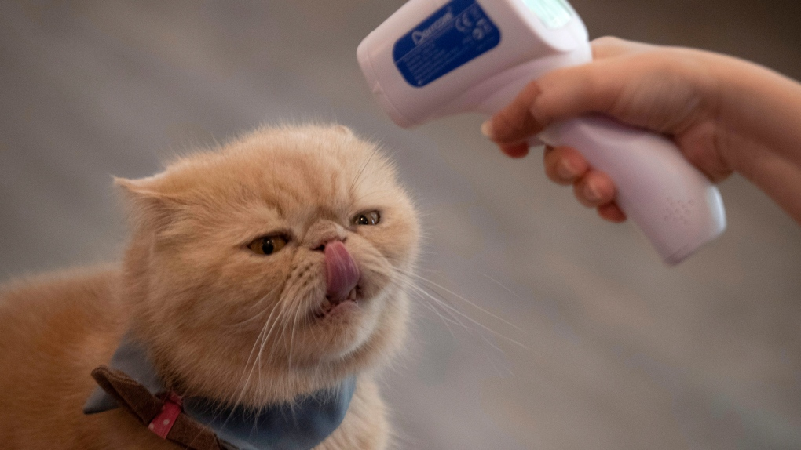

Lab 12: Advanced Block-level Styling II
Big Ideas
For this lab we are experimenting with block-level styling.
challenges
We had a lot of challenges for this lab because we were not sure how to get the contents in the correct positions and had to refer back to the lecture several times. I still am unable to get my proportions to stick when the size of the window changes.
results
Here are the results of my code.
Hello my name is sampson i am not a human i am an dog i like walks and squirrels and treats and running around my backyard i must protec my backyard what is that is that a squirrel bark bark bark bark bark bark bark barkbark bark bark barkbark bark bark bark
It is time for spoopy season i sure do hope starbux has pumkin spice lattes mmm so delicious yum gib me that sugar bb

